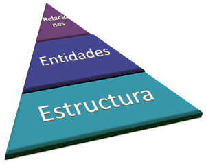
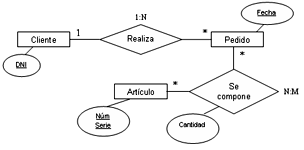

1.2. Elementos de diseño
Los elementos del diseño de una base de datos son:
|
 |
|
Elementos de una base de datos |
Reflexiona
|
Estructura edificación |
Un ejemplo sencillo de entidad es una persona. Sus atributos serían los campos de texto de nombre y apellidos y el atributo clave su DNI.
Atributos de una entidad
Imagen de elaboracion propia
Importante
Ejercicio Resuelto
Escribe, al menos, tres atributos para las siguientes entidades:
- Coche
- Alumno
- País
Comprueba lo aprendido
Importante
De nada sirve definir entidades y atributos si no se establecen las relaciones entre éstas.
Una relación es un vínculo entre dos o más entidades que define la interacción entre las mismas.
|
Un ejemplo sencillo de relación entre dos entidades serían un empleado y el sector en el que trabaja. Existen distintos tipos de relaciones:
|
 Relaciones entre entidades |
Comprueba lo aprendido
Para saber más
En el modelo entidad-relación, muy vinculado al modelo relacional, se usan dos tipos de entidades: fuerte y débil.
Amplía tu información en el artículo modelo_entidad_relación.